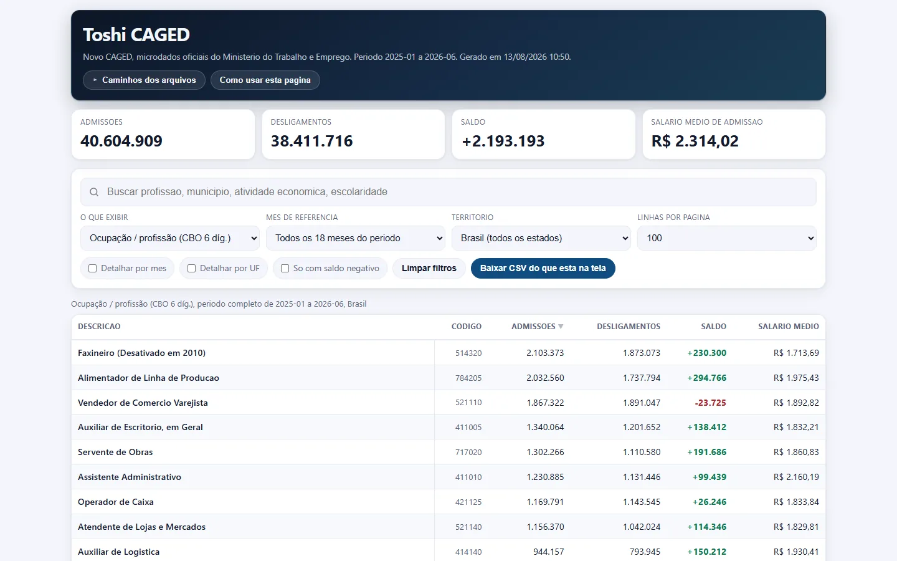
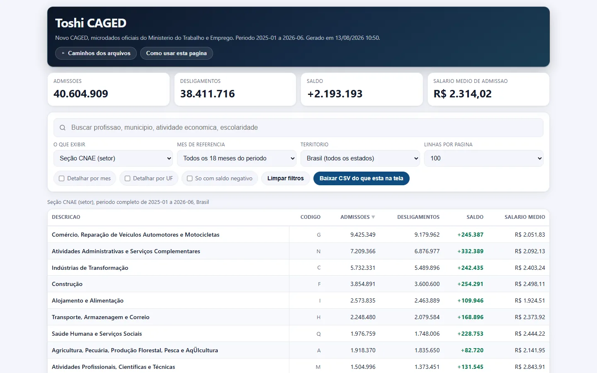
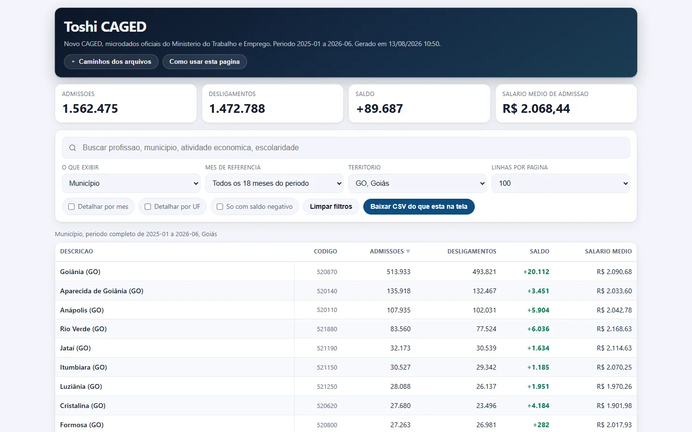
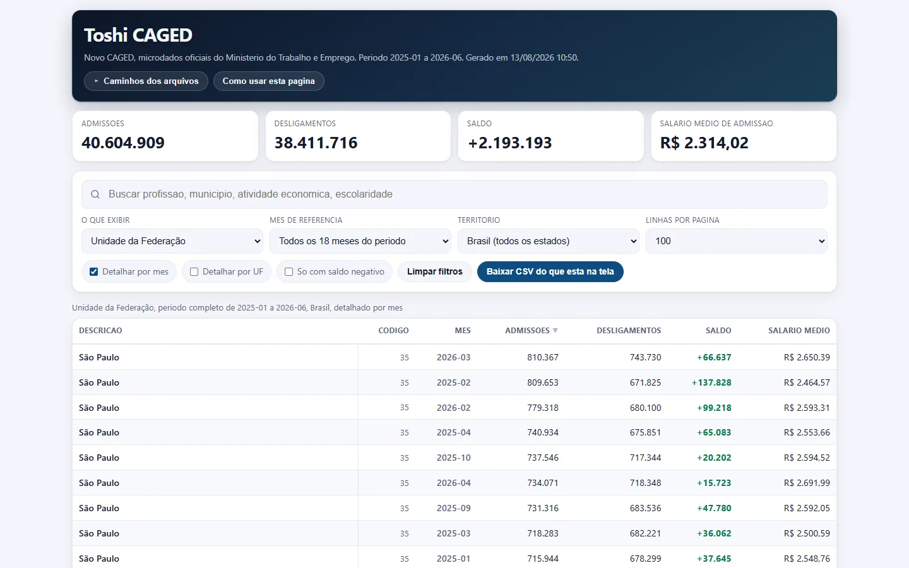
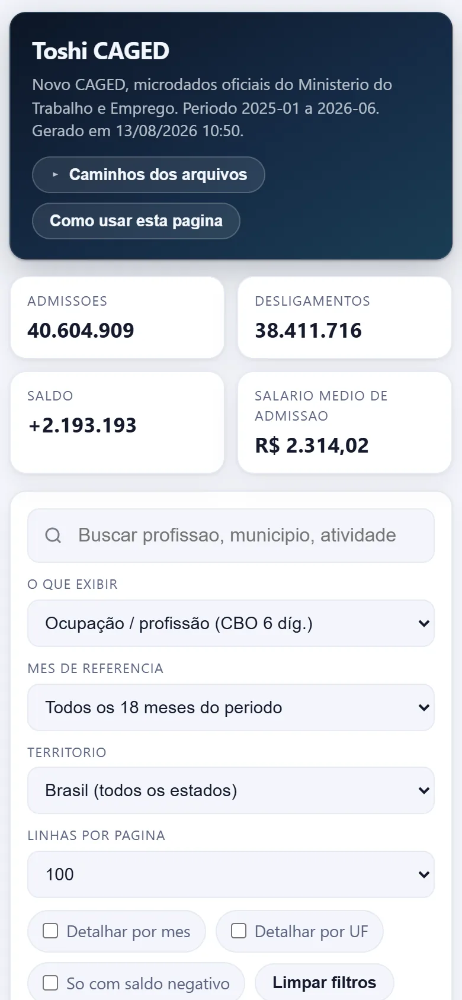

Extrator do Novo CAGED
Ferramenta de linha de comando que baixa os microdados do Novo CAGED do servidor do Ministério do Trabalho, aplica o ajuste oficial, traduz os códigos e entrega um CSV único e um painel HTML que funciona sem internet.
- Fonte
- Ministério do Trabalho
- Dicionários
- Layout oficial e APIs do IBGE
- Formato
- Parquet e CSV
Telas
Capturas do painel publicado.










Fluxo de uso do painel
Processo de extração
Descoberta
Lista no FTP do Ministério do Trabalho todas as competências publicadas.
Download
Baixa os arquivos .7z de cada mês, com retomada e até 4 tentativas por conexão.
Dicionários
Lê o layout oficial em Excel e completa município e CNAE pelas APIs do IBGE.
Tabulação
Lê o texto em blocos, aplica o ajuste oficial e agrega as 22 dimensões.
Saída
Grava o CSV com código e descrição e o HTML com os dados embutidos e compactados.
Ajuste oficial
Saldo por região
Saldo de empregos formais, jan/2025 a jun/2026
Saldo = admissões menos desligamentos. Fonte: painel publicado.
Salário médio de admissão por setor
R$ por mês, jan/2025 a jun/2026
Salários fora da faixa de R$ 100 a R$ 300.000 ficam fora da média.
Opções da linha de comando
- --meses NÚltimos N meses publicados.
- --desde e --ateJanela por competência, no formato AAAAMM.
- --todosSérie completa desde jan/2020.
- --offline e --so-saidaRegera o CSV e o HTML a partir do cache, sem acessar a rede.
Privacidade
Os microdados do CAGED não identificam a pessoa nem a empresa: não têm CPF, nome, CNPJ ou razão social. O painel guarda só totais por mês, UF e categoria.